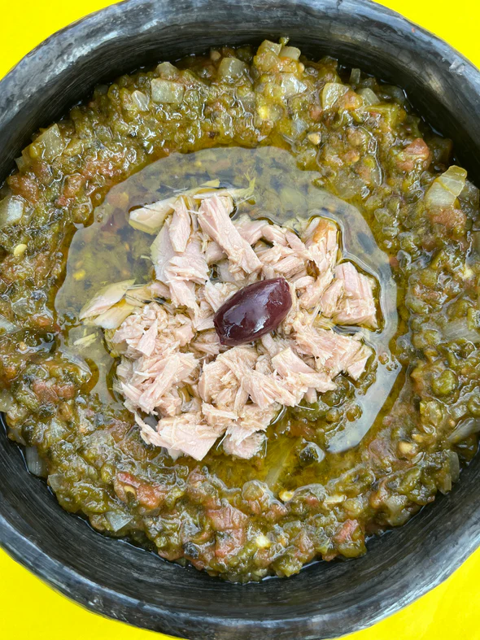

Slata Machwiya

Description
Slata Mechouia, aka ‘grilled salad’ is a summer necessity throughout the Tunisian summer. It is typically served family style to share at the table as a side dish and will often be garnished with tuna, olives as well as capers and/or boiled egg slices. The vegetables are typically grilled over charcoal in a ‘kanoun’, an ancestral clay bbq that’s key to that smoky ‘mechouia’ flavor Tunisians are familiar with.
Ingredients
- Peppers
- 2 Tomatoes
- Garlic
- White onion
- Extra virgin olive
- Ground coriander
- Ground caraway
- Salt
Steps
- Turn on the broiler of your oven and set to high heat. In the meantime, wash the peppers and tomatoes, pat dry them and lay them down on a perforated baking rack set atop another regular baking rack.
- Place the rack with the veggies and broil for 15 minutes. Remove from the oven, flip them over and broil for another 20 minutes so both sides get a nice char and the veggies cook through.
- Once the veggies are nicely charred, transfer them while still hot into a bowl or air-tight container and cover tightly to ensure the steam from the veggies is trapped inside and softens the skins while they are cooling down. This will allow the skin to be removed easily in the next step.
- After 30 minutes, open the container. The veggies should be cooled enough but still warm. Peel off the skins and seeds of the peppers; also remove the skins of the tomatoes, onion, and garlic cloves and transfer them to a cutting board.
- Chop all the veggies together until a somewhat smooth, yet still slightly chunky mixture is obtained. Alternatively, you can roughly chop them in a blender..
- Transfer the chopped veggies to a bowl and add the extra virgin olive oil, coriander, caraway, salt. Mix well and the ‘slata mechouia’ is ready for plating
- Plate the ‘slata mechouia’, pour some more extra virgin olive oil on top and garnish with the boiled egg quarters, olives, and the canned tuna (or any combination of these you prefer).
- Serve and enjoy with your favorite bread!